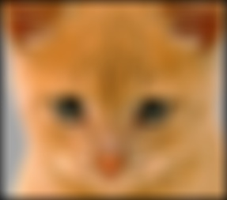
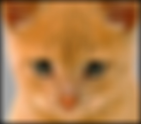

Project 1: Image Filtering and Hybrid Images
Goal
Write an image filtering function and use it to create hybrid images.
Algorithm
Image Filtering
- Judge the filter's parity
- Pad the input image
- Filter each color channel
Both dimensions of the filter should be odd, so my_imfilter() will judge the input filter firstly, if one of its dimension is even, the function would return an error message.
At the beginning, I padded the input image without using padarray() function, just simply created 4 zero_matrices and used cat() function to merge them with the input image (VERSION 1). Compared to padarray() function (VERSION 2), this function can run as fast as it (no matter how big the filter is), but more code amount, so I chose to use padarray() function.
% VERSION 1: pad the input image with zeros
pad_rows = (filter_height - 1) / 2;
pad_cols = (filter_width - 1) / 2;
zero_rows = zeros(pad_rows, image_width, num_colors);
zero_cols = zeros(filter_height - 1 + image_height, pad_cols, num_colors);
padded_image = cat(1, zero_rows, image, zero_rows);
padded_image = cat(2, zero_cols, padded_image, zero_cols);
% VERSION 2: pad the input image with zeros
pad_rows = (filter_height - 1) / 2;
pad_cols = (filter_width - 1) / 2;
padded_image = padarray(image, [pad_rows, pad_cols]);
Since we do not know how many color channels the input image has, we count it firstly and then filter each color channel separately, and merge them in the end. To speed up this function, I use 3 nested loops: the first loop iterates through all the color channels, and the second and third loops iterate through all the image pixels, and then do the dot product to the filter.
Hybrid Images
- Use two cutoff frequencies
- Hybrid image construction
When using the same cutoff frequency to deal with the cat and dog images, I can get a fine result, but when dealing with Marilyn and Einstein images, same cutoff frequency does not work well. So I decided to use two cutoff frequencies, that can help me to control how much high frequency to remove from the first image and how much low frequency to leave in the second image seperately, and then gain a better result of hybrid image.
Blurring image1 to get low frequencies, and remove the low frequencies from image2 by subtracting a blurred version of it from the original version to get its high frequencies. And finally add the low frequencies of image1 and high frequencies of image2 together to construct the hybrid image.
Results and Analysis
Image Filtering
- Input image
- Identity image
- Blur image
- Large blur image
- Sobel image
- Laplacian image
- High pass image
- Gray scale image
Figure 1 is the resized input image.
The test script uses identity filter to filter the input image, that does not change anything (see figure 2) but to test if the padding method used in my_imfilter() function would affect the output image or not. And from figure 1, we can see that it is the same as the input image.
Here a small box filter is used to remove some high frequencies from the input image. And from figure 3, the cat image is blurred slightly and lose some details, we can see that its hair is not as sharp as figure 1 shows, and its eyes are also a little blurry. What's more, in every boundary there is a black line appears, that is caused by padding the input image with zeros.
Here the test script uses a large gaussian filter to blur the input image, and we can see from figure 4 that the cat image loses a lot of high frequencies. And also, its boundaries are filled with more balck pixels, since the filter size is much more bigger that the last one.
Sobel filter is a oriented filter, and here the test script uses a vertical sobel filter, the vertical edges of the cat image are detected and shown (see figure 5), such as its vertical hair and vertical boundries.
Different from gaussian filter, laplacian filter is a high pass filter. From figure 6, the cat image's high frequencies are kept and lose some low frequencies. And also, its feature is well kept after filtering.
Similar to laplacian filter, here the test sript uses a simple high pass filter to remove some low frequencies by subtract the low frequency content directly (see figure 7). After that, the image does lose its low frequencies and some high frequencies are kept, but it also loses some important feature and make it a little hard to be recognized.


 

Figure 1 Figure 2 Figure 3 Figure 4 |


Figure 5 Figure 6 Figure 7 |
Since my_imfilter() function can filter each color channel of the imput image separately, the grayscale image can also be well filtered (see figure 8 to 14).

|
|
Figure 8 ~ 14
|
Hybrid Images
- Low frequencies
- High frequencies
- Hybrid images
From figure 15, we can see that the dog image's high frequencies is removed after blurring it. And also, its boundaries become black because of padding with zeros.
I subtract a blurred version of the cat image from the original one and then remove its low frequencies, the image's high frequencies are kept (see figure 16).
Simply add the low frequencies of the dog image and high frequencies of the cat image together, and then scale it to different sizes, we can see the hybrid images (figure 17). The bigger the hybrid image is (or closer to it), the more "cat" it shows, and the smaller the hybrid image is (or further to it), the more "dog" it shows.


Figure 15 ~ 17: cutoff_frequency1=7, cutoff_frequency2=7
|
When dealing with Marilyn and Einstein images, same cutoff frequency does not work well. From figure 18 to 20, I use the the same cutoff frequency 4 to filter them, there are too many high frequencies kept in the Einstein image, and result in that the hybrid image is similar to the Einstein image even we stand far from it and see it.


Figure 18 ~ 20: cutoff_frequency1=4, cutoff_frequency2=4
|
And then I use the the same cutoff frequency 2 to filter them, the result is still not ideal. Too much feature of the Marilyn image is kept and the hybrid image is more similar to Marilyn (see figure 21 to 23).

Figure 21 ~ 23: cutoff_frequency1=2, cutoff_frequency2=2
|
So I decided to use two cutoff frequencies, that can help me to control how much high frequency to remove from the first image and how much low frequency to leave in the second image seperately, and then gain a better result of hybrid image (see figure 24 to 26).
|
Figure 24 ~ 26: cutoff_frequency1=4, cutoff_frequency2=2
|
When dealing with the fish and submarine images, I used the submarine image as image1 and the fish image as image2 firstly, the hybrid image is good. But then I used the fish image as image1 and the submarine image as image2, the result is not ideal no matter how the two cutoff frequencies changed. After analysis, the more complex the background of image is, the more suitble it is chose to be image2.
|
Figure 27 ~ 29: cutoff_frequency1=2, cutoff_frequency2=5
|
|
Figure 30 ~ 32: cutoff_frequency1=4, cutoff_frequency2=11
|
Shadow.
|
Figure 33 ~ 35: cutoff_frequency1=6, cutoff_frequency2=2
|
Shadow.
|
Figure 36 ~ 38: cutoff_frequency1=5, cutoff_frequency2=9
|
Text.
|
Figure 39 ~ 41: cutoff_frequency1=1, cutoff_frequency2=2
|
Three images.


Figure 42 ~ 45: cutoff_frequency1=2, cutoff_frequency2=7, cutoff_frequency3 = 1
|